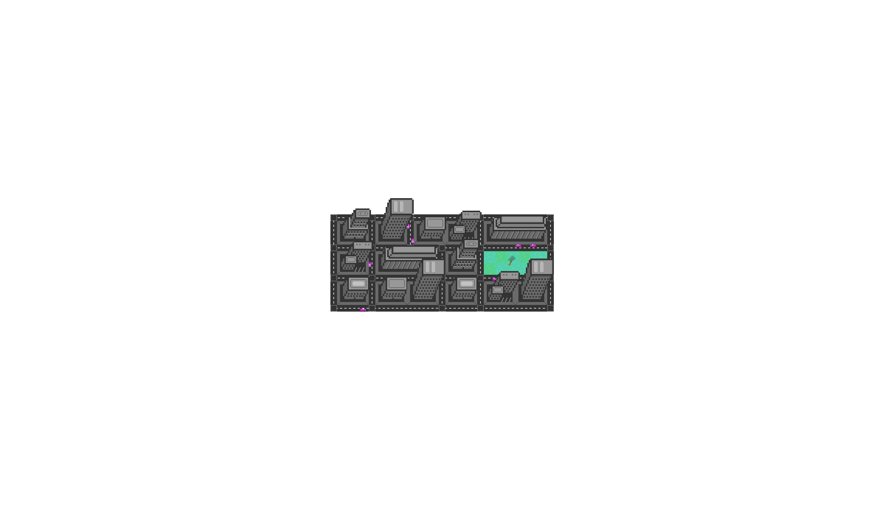
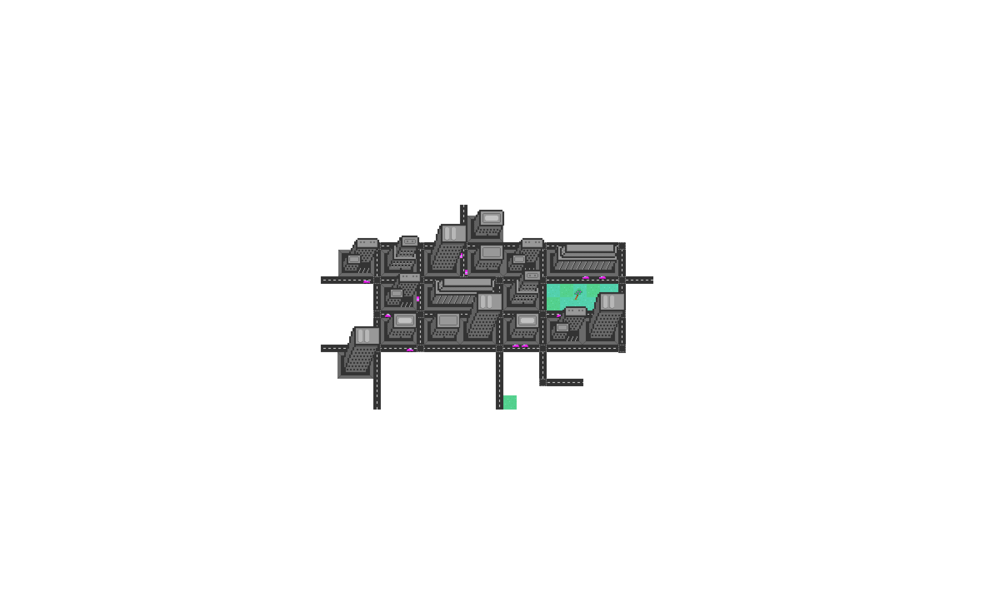
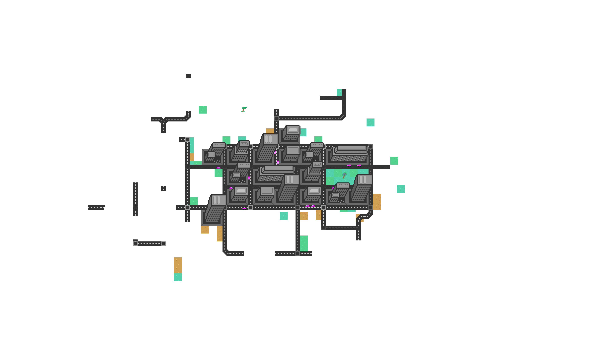
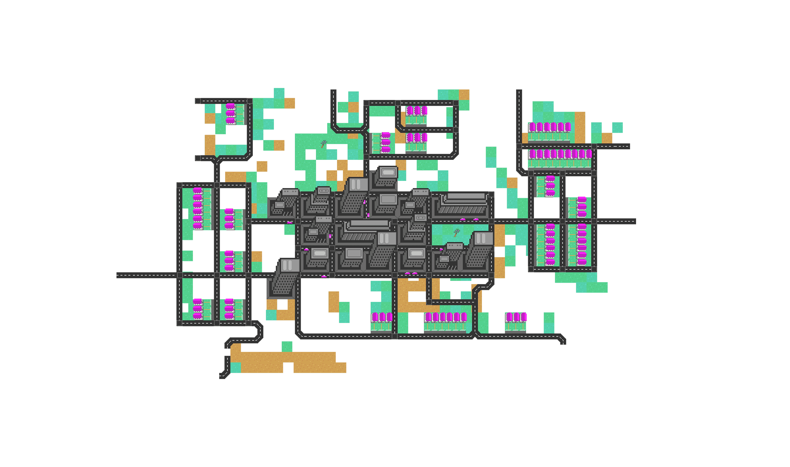
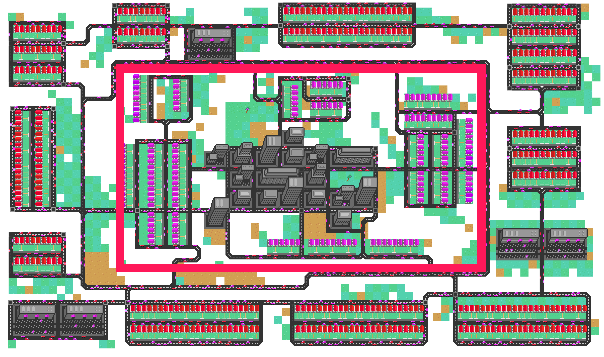

Nacimos con la promesa de que el futuro era nuestro. Treinta y cinco años después, seguimos rebuscándonos la vida, y ahora una máquina le serrucha la escalera a los que vienen detrás.
Llegamos a un mundo que giraba a toda velocidad, y nos prometieron que el futuro era nuestro.
Tengo 35 años. Nací en 1991, el año en que Colombia estrenó Constitución, la Unión Soviética se desarmó y alguien en Suiza publicó la primera página web. A mí también me prometieron que el futuro era nuestro. Bueno. Llevo más de una década esperando que la adultez arranque: el arriendo se come medio sueldo, el contrato se renueva cada diciembre (si se renueva, que esa es otra novela) y la pensión es una idea tan abstracta como el invierno en Barranquilla. Y justo cuando creía haber llegado, veo que la escalera por la que subí a las patadas se le está desapareciendo a los que vienen detrás.
Todos conocemos las estadísticas. Nos casamos más tarde, compramos casa más tarde (o nunca) y tenemos menos hijos que cualquier generación anterior: en Colombia la fecundidad cayó a 1,0 hijo por mujer, que ya es decir. Y según Los Mayores, la culpa es nuestra, claro. Estudiamos la carrera equivocada. Gastamos plata que no tenemos en cosas que no necesitamos. Nunca aprendimos a programar (y ahora resulta que ya ni hace falta, ¡qué tal!). Matamos cereal and department stores and golf and napkins and lunch. Dígale “millennial” a cualquiera de más de 55 y en segundos le devuelve la palabra “cristal”. Nuestro propio Marco Polo intergeneracional.
Así se siente ser joven, o casi joven, en 2026. No solo estamos jodidos: además nos toca aguantarnos los sermones sobre nuestra pereza y nuestros trofeos de participación de parte de los mismos que nos jodieron.
Pero las generalizaciones sobre los millennials, como las de cualquier grupo arbitrario de millones de personas, se caen al primer soplido. Contrario al cliché, la mayoría de los millennials del mundo no fue a la universidad, no trabaja de barista y no tiene papás que la rescaten. En Colombia, más de la mitad trabaja en la informalidad. Cada estereotipo sobre nosotros aplica solo a la tajadita más delgada, más rica y más urbana de los jóvenes. El resto vive en otra película. Y no es de comedia.
We've taken on at least 300% more student debt than our parents.

Fuente: DANE, Encuesta Nacional de Calidad de Vida 2025. En todo el país, el 40,8 % de los hogares arrienda (35,7 % en 2019).
We're about 1/2 as likely own a home as young adults were in 1975.

Fuente: cálculos con datos del DANE (GEIH), enero-octubre de 2025: 48,9 % de los ocupados, 11,3 millones de personas, ganaba menos de un mínimo.
1 de cada 5 jóvenes en el mundo no estudia ni trabaja.

Fuente: OIT, Tendencias Mundiales del Empleo Juvenil 2026 (20 %, más de 257 millones). En Colombia: 20,9 % (DANE, jul-sep 2026).
Based on current trends, many of us won't be able to reture until we're 75.

Fuente: datos de cobertura pensional a diciembre de 2024 (≈24 % de los adultos mayores tiene pensión contributiva). Colombia Mayor cubre a ~1,6 millones de 3,9 millones en pobreza o vulnerabilidad (DNP, CONPES 4176).
Pero no son solo los números.
Lo que nos diferencia de las generaciones anteriores, como personas, es poquito. Lo que cambió fue el mundo alrededor. Durante cuatro décadas, el salario típico creció a la mitad de la velocidad de la productividad. Mientras tanto, todo lo que hace falta para una vida tranquila —estudiar, vivir bajo un techo, enfermarse sin quebrarse— se fue a la estratosfera. Del empleo estable a la red de protección, todo lo que nos separaba de la ruina se fue gastando como suela de zapato viejo. Y las oportunidades con las que los boomers se toparon casi de chiripa se nos alejan. Ah, y llegó algo que en 2017 nadie vio venir: una tecnología que no te echa. Simplemente, no te contrata.
Por eso lo que de verdad nos define no es la crianza helicóptero ni las prácticas sin sueldo ni el Pokémon Go. Es la uncertainty. “Hay días en que respiro y siento que algo me va a reventar el pecho”, dice Valentina, de 27 años, agente de un call center en Bogotá. De lunes a viernes atiende gringos en inglés; los sábados hace uñas a domicilio; los domingos le ayuda a la tía en el negocio. Y aun así no le alcanza para el arriendo, la cuota del celular y el crédito del Icetex. Desde que su empresa puso un asistente de IA a resolver los casos fáciles, a ella le miden cada segundo de los difíciles. Esa misma angustia de paredes que se cierran se repite de Ciudad de México a Madrid, en repartidores, enfermeras, diseñadores. Gente de todos los ingresos. La misma película.
Sería muy cómodo echarle la culpa a la crisis de 2008, o a la pandemia. Pero lo que vivimos ahora —y lo que esas crisis apenas aceleraron— es una convergencia histórica de males económicos, muchos con décadas de gestación. Decisión tras decisión, la economía se volvió una máquina de joder jóvenes. Y la inteligencia artificial le acaba de poner turbo. Si nada cambia, nuestra calamidad va a ser la de todos.
Entender la desventaja estructural es enredado. Vas a necesitar una guía. Te presento a Pipe.


o que Santiago recuerda son las entrevistas con un robot.
Una pantalla. Una cámara. Una voz sintética, amabilísima, que hace siempre las mismas cinco preguntas. Treinta segundos para pensar, dos minutos para responder. Del otro lado no hay nadie: un software califica el tono, las palabras clave y hasta para dónde mira uno.
Era 2024 y Santiago acababa de graduarse de ingeniería industrial en Medellín, con un crédito educativo colgado del cuello. Mandó hojas de vida a 140 vacantes “junior”. A muchas ni siquiera llegó a la entrevista con el robot: un filtro automático las descartó en minutos. “Una vez me rechazaron a las tres de la mañana”, cuenta. “Ahí entendí que ningún humano había leído mi hoja de vida.” ¿Quién rechaza a alguien a las tres de la mañana? Nadie. Algo.
Después de seis meses de mandar hojas de vida al vacío, Santiago aceptó un contrato de prestación de servicios con una entidad pública: seis meses, sin prestaciones, pagando él mismo salud y pensión. En diciembre se le venció, como a todo el mundo. Entonces consiguió puesto en un call center bilingüe. Y ahí viene la broma cósmica: hoy, parte de su trabajo es corregir las respuestas de un asistente de IA. Le enseña, caso por caso, a hacer lo que él hace. Vive con la mamá y le pasa una parte del sueldo para el mercado.
En teoría, Santiago podría volver a buscar empleo de ingeniero. Pero cada mes sin experiencia “en el área” su título vale menos, y los puestos de entrada que pedían analistas para hacer informes, limpiar datos o redactar reportes son justamente los que las empresas ahora le encargan a la IA. A veces piensa en una maestría. Más deuda, para competir por un puesto que tal vez ya no exista. En su trabajo actual, calcula, podrá irse a vivir solo en un año. Y terminar de pagarle al Icetex en ocho.
Hay millones de Santiagos. Los investigadores ya le pusieron nombre a lo que les pasa: la IA no está echando a los que tienen experiencia; está dejando de contratar a los nuevos. Parece un matiz. No lo es. El primer empleo es el escalón donde se aprende todo lo demás, y si ese escalón desaparece, ¿cómo se llega al segundo?
Se ve en los datos. Un equipo de Stanford analizó las nóminas de millones de trabajadores en EE. UU. y encontró que, hasta mediados de 2026, el empleo de los jóvenes de 22 a 25 años en ocupaciones expuestas a la IA está 19 % por debajo de donde estaría si hubiera seguido el ritmo de sus pares en oficios menos expuestos. Los trabajadores mayores no muestran esa brecha. Y el desempleo de los recién graduados (5,2 %) ya supera al de la fuerza laboral total, algo que antes de 2008 no pasaba. Lo que la crisis de 2008 enseñó es que graduarse en un mal momento deja cicatriz: quienes salieron a buscar trabajo en la recesión de 1981 still ganaban menos que los que se graduaron diez años después. Los autores del estudio de Stanford son cautos: hablan de señales tempranas, no de causalidad probada. Pero la señal apunta siempre al mismo lugar: la puerta de entrada.
The Class of Oh No
Quien salió al mercado en 2020 lo encontró cerrado. En cada crisis, los jóvenes pagan primero.
’07 grad’09 gradEn marzo-mayo de 2020, la brecha entre los jóvenes que querían trabajar y los que trabajaban llegó a0puntos. Seis años después, todavía sigue en 8,5.
Sources: “Cashier or Consultant? Entry Labor Market Conditions, Field of Study, and Career Success,” by Joseph G. Altonji, Lisa B. Kahn & Jamin D. Speer, Journal of Labor Economics, 2016; and “The long-term labor market consequences of graduating from college in a bad economy,” by Lisa B. Kahn, Labour Economics, 2010. Projections assume initial earnings of $50,000 and are based on the researchers' analysis of earnings during periods of growth and recession from 1980 to 2011.
Mientras tanto, los que sí logramos entrar fuimos rodando escaleras abajo. En Colombia, la vinculación de los recién graduados al empleo formal viene empeorando, y apenas cerca de la mitad de los técnicos consigue trabajo formal el primer año. El diploma se volvió casi un requisito hasta para los puestos peor pagados. Un papel más para mostrarle al reclutador del supermercado.
Pero las verdaderas víctimas de esta inflación de credenciales son quienes nunca llegaron a la universidad. En el mundo, 1 de cada 5 jóvenes no estudia ni trabaja: más de 257 millones de personas, y el doble de mujeres que de hombres. En Colombia son unos 2,3 millones, y en julio-septiembre de 2026 el desempleo juvenil subió a 15,2 %, casi el doble del nacional. En ese trimestre se perdieron unos 97.000 empleos de jóvenes, y la cuenta propia —el rebusque— creció mientras el empleo asalariado caía. Hay 11.5 million de los ocupados ganando menos de un salario mínimo: casi la mitad (48,9 %) del país.
Cuando uno rastrea estas tendencias hacia atrás, las crisis empiezan a parecer menos un tropiezo y más una culminación. Durante cuarenta años, mientras los políticos, los papás y las listas motivacionales nos decían que estudiáramos duro y construyéramos nuestra marca personal, la economía entera se movió debajo de nuestros pies. Como un temblor lento. De esos que uno no siente hasta que se cae el cuadro.
Durante décadas, buena parte del empleo nuevo fue de bajo salario, temporal y de corto plazo. En América Latina, la informalidad juvenil es del 56 %, frente al 43 % de los adultos. Eso explica por qué el subempleo venía subiendo mucho antes de cualquier crisis. Como escribió el politólogo Jacob Hacker en The Great Risk Shift, el riesgo que antes asumían las empresas y el Estado se trasladó, poco a poco, a las familias: la marea lleva décadas bajando.
El declive del empleo estable empezó en los setenta, con mil cambios pequeños que los boomers apenas notaron. Los bancos centrales le declararon la guerra a la inflación. Las empresas empezaron a pagarles a sus ejecutivos con acciones. Los fondos de pensiones invirtieron en activos más riesgosos. El resultado fue plata entrando a la bolsa como combustible de avión. En pocas décadas, el tiempo promedio que un inversionista mantenía una acción pasó de años a meses, y el sector financiero se volvió un agujero negro que se tragaba cerca de una cuarta parte de las utilidades corporativas.
La presión por dar resultados inmediatos se volvió implacable. Cuando las acciones eran inversiones de largo plazo, los accionistas dejaban que los gerentes gastaran en cosas como beneficios para los trabajadores, porque contribuían a la salud de la empresa. Cuando los inversionistas perdieron la capacidad de mirar más allá del siguiente informe trimestral, cualquier decisión que no subiera las utilidades de corto plazo era casi una traición.
El nuevo paradigma se tomó el mundo corporativo. Fondos de capital privado compraban empresas, despedían o tercerizaban trabajadores y las revendían. Las compañías dejaron de ser entidades con responsabilidades hacia sus trabajadores, sus pensionados o sus comunidades.

Las empresas aplicaron la misma lógica de desguace a sus propias operaciones. Los salarios altos se volvieron lujos que recortar. Los sindicatos —los grandes negociadores de salarios y beneficios— se volvieron enemigos. Y al final, los propios empleados se volvieron un pasivo. La forma más rápida de subir el precio de la acción resultó ser contratar por horas, bajar salarios y convertir a los empleados en contratistas. En 2026 hay una más: reemplazar el puesto de entrada con un agente de IA.


Hace treinta años, entrar a un hotel era entrar a un lugar donde casi todos —aseo, vigilancia, cocina— eran empleados directos, con la misma escala salarial y los mismos beneficios. Hoy casi todos trabajan para contratistas anónimos: Aseo S.A.S., Vigilancia Ltda., Meseros Express. En Colombia, el equivalente más claro está en el propio Estado: en enero de 2026 había 501.423 contratos de prestación de servicios activos, sin prestaciones, renovados cada año y con fecha de vencimiento en diciembre. Los contratos que vencen en diciembre pasaron de unos 11.000 en 2018 a más de 94.000 en 2025. Y cada cambio de gobierno los recorta: el que llegó en agosto de 2026 ya empezó.
El efecto de toda esta “tercerización doméstica” —y, seamos honestos, su verdadero propósito— es que los trabajadores reciben mucho menos de su trabajo. En las plataformas de reparto, por ejemplo, hasta 2025 el repartidor ponía la moto, la gasolina, el celular y el riesgo de accidente, y la empresa ponía la aplicación. Nadie sabe siquiera cuántos son: Rappi reporta unos 70.000 activos; el gobierno habló de 440.000 por formalizar.
Es lo que el economista David Weil llamó, en The Fissured Workplace, el lugar de trabajo fisurado: al pasarle tareas a contratistas, las empresas pagan el precio de un servicio en vez de un salario por un trabajo. Ya no tienen que pensar en capacitación, ascensos ni prestaciones.
Esto afecta a toda la economía, pero los jóvenes estamos en primera fila. Donde las generaciones anteriores acumularon años de experiencia y sueldo estable, muchos de nosotros vamos a pasar la vida laboral entrando y saliendo de trabajos, como quien cambia de bus. Menos capacitación, menos sindicatos: en los países de la OCDE, la afiliación sindical cayó del 30 % en 1985 al 15 % en 2024. Y a medida que las plataformas y la IA afinan sus algoritmos, quedamos a merced de empresas que solo quieren pagarnos el tiempo en que producimos. Ni un segundo más.


Pero la culpa no es solo de las empresas. Para entrar a muchos oficios hoy se pide tarjeta profesional, certificaciones, cursos y prácticas que se pagan antes de ganar el primer peso. Y el título universitario se volvió el filtro universal, aunque el puesto no lo necesite.
In sum, nearly every path to a stable income now demands tens of thousands of dollars before you get your first paycheck or have any idea whether you’ve chosen the right career path. “I was literally paying to work,” says Elena, a 29-year-old dietician in Texas. (I’ve changed the names of some of the people in this story because they don't want to get fired.) As part of her master’s degree, she was required to do a yearlong “internship” in a hospital. It was supposed to be training, but she says she worked the same hours and did the same tasks as paid staffers. “I took out an extra $20,000 in student loans to pay tuition for the year I was working for free,” she says.
Todas estas tendencias —el costo de estudiar, la tercerización, la informalidad y ahora la automatización de los puestos de entrada— suman una economía que le pasó, deliberadamente, el riesgo de las crisis y de los cambios tecnológicos a las personas. Para nuestros papás, un empleo era la garantía de una adultez segura. Para nosotros es una apuesta. Y si en el camino nos pegamos un tropezón, casi nada nos ataja la caída.
Volverse pobre no es un evento. Es un proceso.
Como un accidente de avión, la pobreza rara vez la causa una sola falla. Casi siempre es una cadena de desgracias —perder el trabajo, luego un accidente, luego el desalojo— que se van enredando entre sí. Una jala a la otra.
El politólogo Anirudh Krishna, de la Universidad de Duke, ha estudiado esto durante años: entrevistó a cientos de familias que cayeron en la pobreza y salieron de ella, primero en India y Kenia y después en Carolina del Norte. El mecanismo, encontró, era el mismo en todas partes.
Solemos pensar la pobreza como una piscina: una parte fija de la población que se queda pobre por años. En realidad, sostiene Krishna, es más parecida a un lago, con ríos que entran y salen todo el tiempo. El número de personas en riesgo de volverse pobres es mucho mayor que el de las que lo son.
Vivimos en un estado de volatilidad permanente. En Colombia, la pobreza monetaria bajó a 28 % en 2025. Buena noticia, sí. Pero casi la mitad de los ocupados gana menos del mínimo, el 40,8 % trabaja por cuenta propia y el 85 % de quienes trabajan en microempresas es informal. Esa gente no está en la piscina: está en la orilla del lago. Y en el Chocó, donde el 65,3 % es pobre, la orilla es casi todo el territorio. Basta una ola.
Así se ve la caída. Camilo tiene 19 años y vive en Soacha. Toca guitarra y, hasta hace poco, ahorraba para estudiar música. El año pasado trabajaba en la bodega de una empresa de suplementos, contratado por una agencia de empleo temporal. Nada glamuroso: cargar cajas, armar pedidos. Pero ganaba el mínimo con prestaciones y soñaba con que lo contrataran directo si se la jugaba toda.
Then his sister got into a car accident, T-boned turning into their driveway. “She couldn’t walk; she couldn’t think,” Gabriel says. His mom wasn't able to take a day off without risking losing her job, so Gabriel called his boss and left a message saying he had to miss work for a day to get his sister home from the hospital.


Al otro día lo llamó la agencia: estaba despedido. Nadie le había explicado que su contrato era “por obra o labor”, que en cristiano significa que lo podían sacar cuando quisieran. Ya había faltado un día por una gripa y otro por una infección. Una excompañera le dijo que mejor ni esperara la llamada.
Ahora Camilo hace domicilios en una moto prestada y vive con la mamá y las hermanas en una pieza. Casi todo lo que gana se va en gasolina, la cuota de la moto y el mercado, porque la plata de la mamá se va en las medicinas que la EPS no entrega. Todavía quiere estudiar. Pero como apenas logra mantener la cabeza fuera del agua, ahora le apunta a un técnico del SENA. “No entiendo por qué es tan difícil hacer algo con la vida”, dice. No hay respuesta bonita para eso.
Bueno, sí hay una, y es brutalmente simple. En una economía donde los ingresos son precarios y la red de protección está hecha trizas, un solo golpe de mala suerte se vuelve años de lucha para volver a la normalidad.
En las últimas cuatro décadas cambió profundamente la relación entre los gobiernos y sus ciudadanos. En The Age of Responsibility, el politólogo Yascha Mounk explica cómo la idea de “responsabilidad”, que antes era algo que la sociedad le debía a los más vulnerables, se individualizó: se volvió un deber de cada persona ganarse los beneficios que el Estado ofrece. En América Latina esa lógica tiene una versión propia: la protección social quedó amarrada al contrato formal, que la mitad de la gente nunca ha tenido.
En Colombia, el piso es estrecho. Renta Ciudadana llega a unos 800.000 hogares, con pagos de hasta unos 500.000 pesos por ciclo, no por mes. Renta Joven cubre a unos 96.000 estudiantes. Colombia Mayor le da a cada beneficiario mayor de 80 años 225.000 pesos, cuando hay 3,9 millones de adultos mayores en pobreza o vulnerabilidad y el programa cubre a unos 1,6 millones.
La lista sigue. Mi Casa Ya, el subsidio con el que muchos millennials soñábamos con el primer apartamento, pasó de 61.082 hogares beneficiados en 2022 a 18.838 en 2025, y las postulaciones están suspendidas desde diciembre de 2024. Las hipotecas rondan el 14 % anual. Y la administración del conjunto subió 17 % en un año.
En lo que parece un chiste cruel, casi todas las formas de protección disponibles para los jóvenes están atadas al empleo formal: la cesantía, la pensión, la salud contributiva, las vacaciones. Si trabajas por cuenta propia, por prestación de servicios o en una plataforma, todo eso lo pagas tú, o no lo tienes.
Cuando había empleos decentes y sindicatos fuertes, tenía (más o menos) sentido dar salud y pensión a través del empleador. Pero para los freelancers, los temporales y los contratistas —o sea, nosotros— esos beneficios son plata de Monopolio. La reforma laboral de 2025 (Ley 2466) obligó a las plataformas de reparto a cotizar seguridad social por sus repartidores y convirtió el contrato de aprendiz del SENA en contrato laboral. Pero el nuevo gobierno ya propuso cambiar ocho de sus decretos reglamentarios, incluido el de los repartidores.
Y luego está la salud.
Y la salud vive su peor momento en años. La reforma se hundió dos veces en el Senado. Nueva EPS, intervenida y con 11,3 millones de afiliados, recibió 231.484 quejas solo en el primer semestre de 2026. Las tutelas en salud subieron 34 % en 2024, y el gasto de bolsillo de las familias llegó al 17,2 % del gasto en salud, cerca del umbral que la OMS considera peligroso. Y de todos los eventos que desatan la espiral hacia la pobreza, según Krishna, una lesión o una enfermedad es el detonante más común.
“Todos estamos a un evento de perderlo todo”, dice una abogada de insolvencia en Bogotá, millennial como yo (también un personaje compuesto). Para muchos de sus clientes menores de 35, la caída empieza con un accidente o una enfermedad. “No tiene con qué pagar, entonces le pide al gota a gota. Le cobran 20 % al mes. Se atrasa, llegan las amenazas, le toca pedirle a otro para pagarle al primero, y así.” ¿Y quién los salva? Para muchos, la única red de protección que existe: los papás.
Pero ese salvavidas, como todos los demás, no está disponible para todo el mundo. Casi todas las vías de acumulación —educación superior, vivienda, crédito— se les han negado históricamente a las comunidades étnicas y a las regiones olvidadas. En Colombia, la pobreza multidimensional es del 37,9 % en los hogares con jefe indígena y del 17,4 % con jefe afrocolombiano, frente al 7,9 % en los hogares sin autorreconocimiento étnico; en el Chocó, el 65,3 % de la gente es pobre. Y no es solo nuestro: en EE. UU., la riqueza mediana de las familias negras cayó cerca de 25 % desde 2022, mientras la de las blancas siguió grow by 9 percent.
El resultado es que los jóvenes de los grupos y regiones más pobres están todavía más expuestos al desastre. Los de clase media alta tienen un iceberg de patrimonio familiar al que pueden recurrir para la matrícula, el arriendo o la cuota inicial. Los demás, no. Y como en Colombia buena parte del patrimonio de las familias está en la casa, la herencia va a separar cada vez más a los hijos de propietarios de todos los demás.
Así que, en lugar de recibir ayuda de su familia, muchos jóvenes son los que la dan. Cualquier ingreso extra de un nuevo trabajo o un aumento se lo tragan las deudas de la casa, las medicinas de los papás o el arriendo de los hermanos. Y la movilidad es lenta: según la OCDE, en Colombia una familia del 10 % más pobre necesitaría once generaciones para llegar al ingreso medio, el peor resultado entre 30 países.
Arc of Injustice
The racial wealth gap isn't just glaring. It's growing.
Black WealthWhite WealthEn 2025, la pobreza multidimensional en el campo es casi1015166986la de las cabeceras.
Fuente: DANE, Pobreza Multidimensional (IPM) 2025, Gráfico 2: incidencia en cabeceras y en centros poblados y rural disperso, ECV 2018-2025 (boletín del 14 de abril de 2026). En 2018 el campo tenía 38,6 % y la ciudad 13,2 % (2,9 veces); en 2025, 22,4 % y 6,3 % (3,6 veces). La brecha en puntos bajó de 25,4 a 16,1, pero la razón subió.
¿Quiere deprimirse un poquito más? Siéntese y piense en lo que nos va a pasar cuando estemos viejos. Pese a todas las historias de millennials irresponsables que no planean su retiro (como si los abuelos se hubieran pasado los 25 años estudiando su fondo de pensiones), el problema no es la falta de educación financiera. Es que, para la mayoría, nunca va a haber pensión. Así de sencillo. Así de grave.

En el papel, la pensión colombiana parece generosa: la OCDE calcula que quien cotice toda su carrera con un salario promedio recibirá el 73 % de su ingreso. Pero esa carrera completa no existe para la mayoría: con una informalidad del 55 %, solo cerca de uno de cada cuatro adultos mayores tiene pensión hoy. La reforma pensional, aprobada en 2024, no arrancó en 2025: la Corte la frenó y fijó su entrada en vigor para el 1 de abril de 2027, con una renta solidaria de 225.000 pesos al mes, double the amount to her retirement savings that a boomer did. Oh, and she'll have to do it on lower wages. This scenario gets even more dire when you consider what's going to happen to Social Security by the time we make it to 65. There, too, it seems inevitable that we’re going to get screwed by demography: In 1950, there were 17 American workers to support each retiree. When millennials retire, there will be just two.
Hay una forma en que muchas familias construyeron patrimonio y llegaron a viejas con algo de dignidad y tranquilidad. Hablo, claro, de la casa propia. Por lo menos eso sí lo podemos lograr, ¿cierto?


Cada vez que Jhon se pasa a un apartamento nuevo, se acuesta en el piso de la sala. Bocarriba. En silencio.
Es un ritual, un recordatorio de los años en que no tuvo piso propio ni techo seguro. Creció en Quibdó, en un departamento donde dos de cada tres personas son pobres, y llegó a Medellín a los 19 con una maleta y el teléfono de un primo. Durmió en sofás prestados, en una pieza con cuatro desconocidos y, durante un mes, en una iglesia. “En las entrevistas me preguntaban por qué no tenía dirección fija”, dice. Como si uno escogiera eso.
Lleva diez años en la ciudad. El ingreso le ha subido, pero a él lo han ido empujando cada vez más lejos. Primero, una pieza en el centro. Después, un apartamento compartido en Laureles, hasta que el dueño descubrió que le salía más rentable alquilarlo por noches a los extranjeros. Después, Bello, a una hora en metro y bus. Ahora vive en el norte del valle de Aburrá, en un apartaestudio pegado a una vía de buses que no para en toda la noche. Ni los domingos.
Y ya es una carga. Jhon trabaja como vigilante, en turnos de 12 horas, para una empresa de seguridad contratista: el mejor sueldo que ha tenido. Pero el arriendo se le come casi la mitad, y en 2027 los arriendos subirán con una inflación que en octubre de 2026 iba en 6,3 %. Solo encontró un dueño que lo aceptara sin fiador con finca raíz, y a cambio le pidió tres meses por adelantado. Tres meses. Por adelantado.
Como el arriendo se paga el 1 y a él le pagan el 15, cada mes vive dos semanas en rojo. Después del arriendo, el transporte y la cuota del celular, le queda poquito para comer. La primera vez que hablamos era 27 y Jhon tenía la cuenta en ceros. La noche anterior había empeñado el parlante para los pasajes de la semana. Sin música, pero llegando al trabajo.
Pese a toda la tinta gastada en la narrativa de que los millennials no quieren crecer, Colombia es twice as many: en 2025, el 40,8 % de los hogares vivía en arriendo, frente al 35,7 % en 2019, y en Bogotá el 57,4 %. Y contrario al cliché, en Colombia apenas el 36 % de los jóvenes de 20 a 29 años vive con sus papás, menos que en Chile o México. No es que no queramos irnos: es que nos vamos a arrendar. La crisis de nuestra generación no se puede separar de la crisis de vivienda asequible.
En Bogotá, entre 2011 y 2025, el arriendo real subió 50 % y el ingreso de quienes arriendan, apenas 19 %. La mitad más pobre de los arrendatarios ya paga más del 30 % de lo que gana. Comprar 60 metros cuadrados exige unos 22 años de ahorro, según cálculos de Fincaraíz. Y según el Banco Mundial, con un salario mínimo no se puede financiar una vivienda en ninguno de los once países latinoamericanos que estudió. Colombia incluida.
Que haya menos propietarios, por sí solo, no es una tragedia. El lío es que armamos toda una secuencia vital alrededor de comprar casa: uno arrienda un tiempo para ahorrar la cuota inicial, compra un apartamentico con la pareja, después uno más grande para criar a los hijos. Cuando termina de pagar la hipoteca, la casa es un activo para vender o un lugar barato donde envejecer. Fin. Como en las telenovelas.
Eso funcionaba cuando los arriendos eran lo bastante bajos para ahorrar y las casas lo bastante baratas para comprar. Andrés, un amigo de 41 años (otro personaje compuesto), me contó que su papá compró su primer apartamento en Bogotá a los 30, en los noventa, con sueldo de profesor de colegio público y un crédito del Fondo Nacional del Ahorro. Le costó unos cuatro años de salario, in today’s dollars. Andrés gana más de lo que ganaba su papá a esa edad. Aun así, un apartamento parecido en el mismo barrio le costaría más de una década de sueldo. El papá pagó su casa con cuatro años de trabajo. Andrés lleva cuatro años ahorrando para la cuota inicial. Y contando.





Durante un tiempo, la ciudad respondió como pudo: casas que se volvieron edificios, terrazas que se volvieron apartamentos y barrios enteros hechos a mano, ladrillo por ladrillo.
Pero la vivienda formal bien ubicada se volvió lenta y cara de construir. Los empleos y la gente siguieron llegando; la vivienda asequible, no. Entre 2011 y 2025, el arriendo real en Bogotá subió 50 %. El ingreso de los que arriendan, 19 %.
Buena parte de esto se explica con una palabra:
Al principio, la idea era razonable: que los barrios ricos pagaran más por el agua y la luz para que los pobres pagaran menos. Los estratos 1, 2 y 3 reciben subsidios; el 5 y el 6 pagan una contribución del 20 %.
Pero con el tiempo, el número se volvió etiqueta: en la hoja de vida, en la primera cita, en el banco. Dime en qué estrato vives y te diré quién eres.
La Ley 142 de 1994 volvió norma nacional ese invento de los ochenta. Hoy cada barrio carga su número, y el número dice quién vive dónde: en Bogotá, más de ocho de cada diez personas viven en estratos 1, 2 y 3, lejos de casi todo.
Las normas pedían parqueaderos, retrocesos, alturas máximas y licencias que tardan meses. Basically, cities mandated McMansions.


Seguimos viviendo con esa herencia. Una cuarta parte del suelo urbano de Bogotá nació informal: levantada a punta de ladrillo propio y sin licencia, porque la ciudad formal nunca alcanzó.
Y no es solo nuestro: en América Latina, casi la mitad de los hogares que arriendan gasta más del 30 % de lo que gana en el arriendo.
Porque toda la urgencia de construir viene de quienes necesitan dónde vivir. Pero todo el poder político lo tienen quienes ya son dueños.
Para un propietario, la crisis de vivienda no existe.
Why?
Porque cuando sube el valor de las propiedades, sube su patrimonio. Tienen todos los incentivos para bloquear lo nuevo.
Lo hacen convirtiendo en armas las normas ambientales, las de patrimonio y los trámites eternos.
Obligan a que los edificios sean más bajos para que no den sombra. Exigen dos parqueaderos por cada apartamento.
Se quejan de que un edificio nuevo va a destruir el “carácter del barrio” cuando lo que reemplaza es… un parqueadero. (Pasa más de lo que uno cree.)
Todo ese trámite extra hace que construir tome más tiempo y cueste más.
Y eso significa que la única forma en que la mayoría de constructoras gana plata es haciendo apartamentos de lujo.
Por eso las ciudades son impagables. Todo el sistema está diseñado para producir vivienda cara justo cuando necesitamos lo contrario.
La crisis de vivienda en las ciudades más prósperas está distorsionando toda la economía. Durante buena parte del siglo XX, la forma en que la gente mejoraba su situación era mudarse hacia las oportunidades. Los arriendos eran más altos en las ciudades en auge, pero los salarios también.
Los empleos “buenos” —estables, formales, con salario decente— se concentran en las ciudades grandes como nunca. En Bogotá la informalidad es del 34 %; en Sincelejo, del 65 %; en el campo, del 83 %. Para un joven que busca trabajo, mudarse a una ciudad grande no es un lujo. Es casi una necesidad.
Pero el arriendo de la ciudad grande se come el sueldo extra. Un apartaestudio en Chapinero pide en promedio unos dos millones al mes: más que un salario mínimo entero. Y en Medellín, los prestadores de vivienda turística registrados pasaron de 521 en 2019 a 8.322 en 2026. Turistas y nómadas digitales llegaron a Laureles y El Poblado; muchos de los que vivían ahí se fueron a la periferia.
Eso les deja a los jóvenes, sobre todo a los que no tienen título universitario, una elección imposible: mudarse a una ciudad con buenos empleos pero arriendos absurdos, o quedarse donde el arriendo es barato pero casi nadie paga más del mínimo.
Ese dilema alimenta la trituradora de desigualdad en que se convirtió la economía. En lugar de ofrecer una forma de construir patrimonio, las ciudades se están volviendo concentraciones de gente que ya lo tiene.
Los millennials que pueden mudarse a esos oasis de oportunidad disfrutan de sus ventajas: mejores colegios, más servicios, más peldaños en la escalera laboral. Los que no pueden pagar una ciudad grande y cara se quedan… estancados.
Total, la verdadera razón por la que los millennials no logramos la adultez que nuestros papás imaginaron es que intentamos ganar dentro de un sistema que ya no tiene sentido. Nos vendieron la casa propia y la migración a la ciudad como puertas a la prosperidad porque, cuando los boomers crecieron, lo eran. Pero las reglas cambiaron a mitad del partido. Y nadie nos avisó.
Which means
Empezamos a ganar platica más tarde, y menos. Vivimos en arriendo y con contrato hasta diciembre.
no alcanzamos a ahorrar.
no podemos comprar casa ni cotizar para una pensión.
que si nada cambia…Total: todos vamos para un lugar muy oscuro.
Lo más llamativo de los problemas de los millennials es lo entrelazados, autorreforzados y everywhere they are.
Mientras reportaba esta historia hablé con repartidores que ahorran para el primer mes de arriendo, con practicantes sin sueldo y con agentes de call center que entrenan a la IA que los podría reemplazar. Una de ellas, Daniela, de 33 años, es contratista del Estado desde hace siete; la mamá trabajó 30 años como empleada doméstica sin que nadie le cotizara un peso. Cada diciembre, cuando a Daniela se le vence el contrato, la mamá le recuerda que su plan de pensión se llama “plan D”. D de Daniela.
Arreglar lo que nos hicieron va a pedir mucho más que retoques. Aunque la economía crezca y el desempleo siga bajando —en Colombia está en mínimos históricos—, seguimos en una ruta de más inseguridad para los jóvenes. El mundo en el que uno entraba a una empresa recién graduado y salía con reloj de oro no va a volver. Tratar de revivirlo es mandar botes salvavidas a un remolino.
But still, there is already a foot-long list of overdue federal policy changes that would at least begin to fortify our future and reknit the safety net. Even amid the awfulness of our political moment, we can start to build a platform to rally around. Raise the minimum wage and tie it to inflation. Roll back anti-union laws to give workers more leverage against companies that treat them as if they’re disposable. Tilt the tax code away from the wealthy. Right now, rich people can write off mortgage interest on their second home and expenses related to being a landlord or (I'm not kidding) owning a racehorse. The rest of us can’t even deduct student loans or the cost of getting an occupational license.
Una de las grandes ideas de moda sigue siendo la renta básica universal: un pago mensual, sin preguntas, para todos. En 2017 era una promesa; hoy hay evidencia. El experimento más grande, en EE. UU., le dio US$1.000 al mes durante tres años a cientos de personas de bajos ingresos: trabajaron apenas 1,3 horas menos por semana, buscaron empleo con más cuidado y gastaron más en necesidades básicas. El efectivo no destruye el trabajo, pero tampoco transforma por sí solo la vida de nadie. Y vale la pena recordar que los programas que ya tenemos —Renta Ciudadana, Colombia Mayor, los subsidios de vivienda— no son inútiles por naturaleza. Se han vuelto insuficientes a propósito.
Pero hay algo en lo que sí tienen razón: necesitamos estructuras públicas que respondan a cómo trabajamos hoy. Los “beneficios portátiles” intentan romper la distinción entre empleados con protección y contratistas sin nada. La idea es ridículamente simple: amarrar los beneficios al trabajo, no al empleo. Por cada hora que trabajas, quien te contrata aporta a un fondo que te paga cuando te enfermas, tienes un hijo, envejeces o te quedas sin trabajo. El fondo te sigue de trabajo en trabajo. En junio de 2026, la OIT aprobó el Convenio 193, la primera norma internacional sobre trabajo en plataformas: 406 votos a favor y 8 en contra.
Hay dos modelos en competencia. Europa obliga a presumir que el repartidor es un empleado, salvo prueba en contrario, con plazo para aplicarlo hasta diciembre de 2026. Otros países prefieren beneficios “voluntarios” que mantienen al trabajador como contratista. Colombia, con la Ley 2466, se alineó con Europa: la plataforma paga el 60 % de la salud y la pensión y el 100 % de los riesgos laborales del repartidor. Trasladar el riesgo a los trabajadores no fue un fenómeno natural. Fue una decisión. Y se puede revertir de la misma forma.
Otro experimento obvio es ampliar los programas de empleo. Mientras las oportunidades decentes se encogían, el mensaje de los gobiernos a los más pobres siguió siendo el mismo: no te estás esforzando lo suficiente. Y en un mundo donde la IA se come los puestos de entrada, alguien tiene que give people jobs, con contrato y aprendizaje real.
Como la mayoría crecimos sin ellos, los programas de empleo pueden sonar demasiado ambiciosos o sospechosamente soviéticos. No son ninguna de las dos cosas. Colombia ya los ha probado: en 2010, la Ley 1429 les dio descuentos a las empresas que contrataran menores de 28 años, y en la pandemia el PAEF pagó parte de la nómina de miles de empresas para que no despidieran a nadie. La idea es simple: que contratar a un joven no sea un riesgo que el empleador corre solo.
Los subsidios salariales para jóvenes suelen subir el empleo mientras duran; la evidencia internacional dice que rara vez, por sí solos, mejoran la empleabilidad de largo plazo. Por eso importa lo que viene pegado: aprendizaje real, contrato formal, experiencia que cuente. El contrato de aprendizaje del SENA, convertido en contrato laboral por la reforma de 2025, es una versión de eso. La pregunta es si va a sobrevivir a los cambios de gobierno y si las empresas lo usarán para formar jóvenes o para conseguir mano de obra barata.
Pero antes de dejarme llevar enumerando soluciones urgentes y obvias, hagamos una pausa de realidad: Who are we kidding? Las reformas que el artículo de 2017 pedía —protección para los trabajadores de plataformas, contrato para los aprendices, pensiones con pilar solidario— ya están en la ley colombiana. Pero están reglamentadas a medias, aplazadas hasta 2027 o en revisión por un gobierno que ganó con el voto de los mayores: el nuevo Ministerio del Trabajo ya propuso cambiar ocho decretos de la reforma laboral. Desde arriba, las cosas no se ven mejor.
Por eso, por ahora, toca dar la pelea donde se puede ganar.
Hay ejemplos cerca. En Brasil, Minha Casa Minha Vida ha contratado 2,7 millones de viviendas desde 2023. En Chile, el plan de emergencia habitacional reportó más de 262.000 soluciones entre 2022 y 2026, contando subsidios y arriendos. Y lejos, Auckland mostró lo básico: después de liberar la construcción en 2016, los arriendos de tres habitaciones quedaron entre 22 % y 35 % por debajo de donde habrían estado. Construir más, y cerca del empleo, funciona. Las iniciativas locales son populares, efectivas y nuestra mejor esperanza para frenar el individualismo estilo “Mad Max”.
Las cortes también abren caminos. En España, después de la Ley Rider, Glovo terminó contratando a unos 14.000 repartidores y enfrenta reclamos millonarios de la Seguridad Social. En Colombia, la Corte Constitucional salvó la mayor parte de la reforma pensional en agosto de 2026. Una ola de demandas por condiciones laborales y robo de salarios bastaría para que cualquier gerente hiciera la misma cuenta: tercerizar al trabajador ya no sale tan barato.

Y luego está la vivienda, donde el potencial —y la necesidad— de la acción local es obvio. No basta con ir a los cabildos a callar a los que se oponen a todo (aunque hay que hacerlo). También hay que asegurarse de que el sistema de aprobación de nuevas construcciones no priorice a los propietarios por encima de todos los demás. Hoy los trámites examinan con detalle cómo un edificio nuevo afectará el tráfico, el ruido, los parqueaderos y las sombras. Pero nunca investigan las consecuencias de not construir: precios que suben, arrendatarios desplazados, trabajadores que viajan horas desde la periferia.
Algunas ciudades por fin lo están reconociendo. El 5 de noviembre de 2026, Medellín aprobó un nuevo POT que prohíbe la vivienda turística en las zonas residenciales y la condiciona en las mixtas, después de un debate en el que pesó un estudio universitario financiado por Airbnb. Durante décadas, los políticos tuvieron pánico de molestar a los propietarios. Pero con los arrendatarios como mayoría en Bogotá —más de la mitad de los hogares—, podemos ser una fuerza política poderosa.
La misma lógica aplica a toda nuestra generación. En Colombia, unos 9,5 millones de jóvenes de 18 a 28 años podían votar en 2026: cerca de un cuarto del censo electoral. El problema, como has oído mil veces, es que no votamos lo suficiente.
Pero como todo lo de los millennials, cuando uno escarba en los números la historia es más complicada. En la segunda vuelta presidencial del 21 de junio de 2026, Abelardo de la Espriella le ganó a Iván Cepeda por 49,66 % contra 48,70 %: unos 250.000 votos. Las encuestas daban a Cepeda entre el 60 % y el 68 % de los jóvenes de 18 a 24 años, y a De la Espriella la mayoría de los votantes de 35 a 59. Los jóvenes que votaron no definieron la elección; la definieron los que se quedaron en la casa.
El voto joven ya no es un bloque garantizado para nadie. Y cuando lo es, pierde si se moviliza menos que el de los mayores. La Registraduría ni siquiera publica la participación por edad, así que no sabemos con precisión cuántos fuimos. ¿Cómo exigir lo que ni se mide? Pidiendo esos datos, facilitando la inscripción y defendiendo las reformas que ya existen, en lugar de solo soñar con nuevas. Es la única forma de tener, algún día, nuestro propio pacto social.
O, como dice el título de un libro de Shaun Scott, Millennials and the Moments That Made Us: o hacemos política o la política nos la hacen a nosotros.
And that’s exactly it. The boomer-benefiting system we’ve inherited was not inevitable and it is not irreversible. There is still a choice here. For the generations ahead of us, it is whether to pass down some of the opportunities they enjoyed in their youth or to continue hoarding them. Since 1989, the median wealth of families headed by someone over 62 has increased 40 percent. The median wealth of families headed by someone under 40 has decreased by 28 percent. Boomers, it's up to you: Do you want your children to have decent jobs and places to live and a non-Dickensian old age? Or do you want lower taxes and more parking?
Then there’s our responsibility. We’re used to feeling helpless because for most of our lives we’ve been subject to huge forces beyond our control. But pretty soon, we’ll actually be in charge. And the question, as we age into power, is whether our children will one day write the same article about us. We can let our economic infrastructure keep disintegrating and wait to see if the rising seas get us before our social contract dies. Or we can build an equitable future that reflects our values and our demographics and all the chances we wish we'd had. Maybe that sounds naïve, and maybe it is. But I think we're entitled to it.